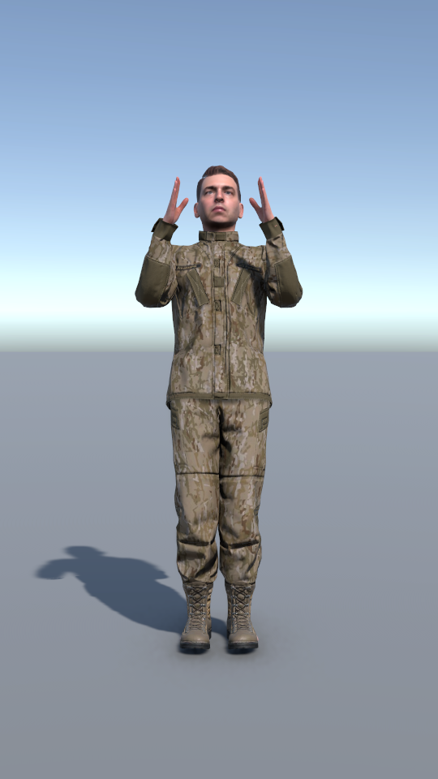
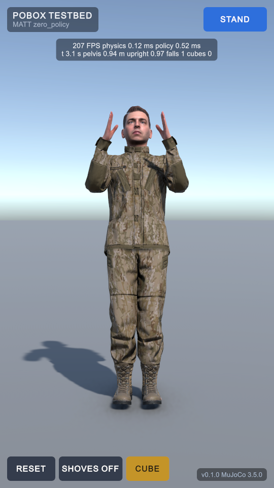

PoBox retrofit: the testbed and its HUD
2 October 2026 · Phase B of tasks.md · the new screen before and after its HUD, with each part marked
The testbed is a new scene, Assets/Scenes/Testbed.unity, where one boxer stands on MuJoCo's physics and
nothing of Unity's. It is where each rung of training is checked before it goes into the boxing game. The boxing
game's own HUD has not been touched.
BEFORE: THE SCENE AS FIRST BUILT

Matt's own mesh riding on his MuJoCo body, the floor, a light. Nothing to press and nothing to read.
AFTER: THE FIVE ANCHORS

1 2 3 4 5 6- Top left: title. The screen's name, and under it the boxer and the policy file driving him. Here the policy
is
zero_policy: it always answers zero, so the guard is held by the joint drives alone. - Top centre: frame rate and telemetry. Frames a second, milliseconds for one physics step and for one control step's observation and policy, then simulated time, pelvis height, how upright he is, falls, and cubes in play.
- Top right: behaviour selector. Cycles STAND, WALK, TURN. It changes what the boxer is asked to do (the command and where his stand-in opponent is). A zero policy ignores it; a trained one will not.
- Bottom left: RESET, SHOVES, CUBE. RESET stands him back in his guard by writing MuJoCo's state. SHOVES turns on a 10 to 30 N s shove every few seconds. CUBE throws one of the eight pooled cubes at his chest at 5 m/s, or drops it on him.
- Bottom right: version. The app's version and the MuJoCo library actually loaded (3.5.0).
- The boxer. Not part of the HUD, but new: the mesh is placed on MuJoCo's bodies every frame. The grey collision shapes are still there, switched off.
What is under the picture
| Check | Result |
|---|---|
| Unity physics components in the scene (Rigidbody, ArticulationBody, Collider, Joint) | 0 of each |
| The model Unity compiles, against the trainer's, for all seven boxers | 0 differences at 1e-6 |
| First observation, Unity against C MuJoCo 3.5.0 (103 numbers) | largest difference 6.0e-08 |
| Zero-action run of 5 s with a cube strike at 2 s: a joint, Unity against C MuJoCo | within 1.8e-05 rad throughout |
| The same run: pelvis height | within 0.009 mm |
| Cost in the editor on this laptop | 0.12 ms a physics step, 0.5 ms a control step, about 220 frames a second |
Not there yet. The camera does not follow the boxer, so one that walks or falls leaves the picture. Only Matt is
in the scene; the other six have prefabs but no way to pick them on this screen. Nothing has been trained on the new
bodies: with the zero policy Matt stands for a few seconds and tips over. None of it has been run on a phone.